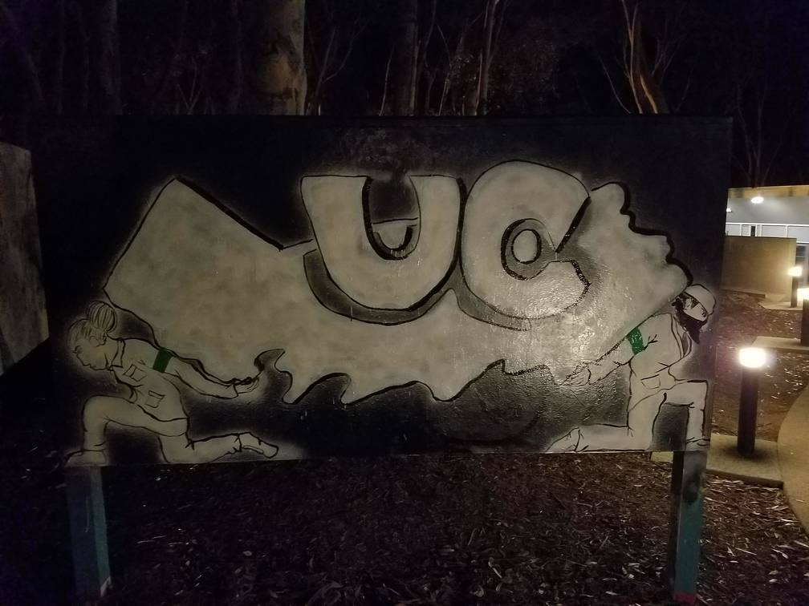
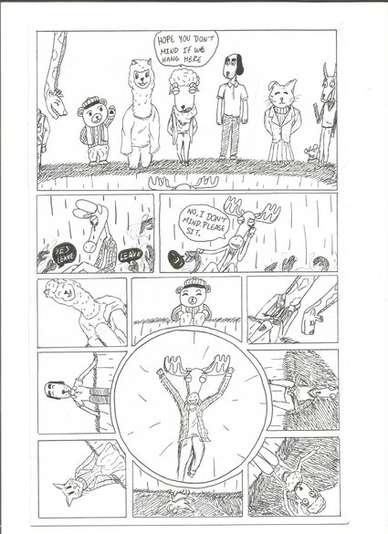

{kind=link}
About Me
Hi y'all name is Abraham I'm a third year college student at UCSD. I am an Applied Mathematics student who is currently getting a minor in Math Education and Philosophy. I plan on going into the Masters and Teacher credential program that they have here at UCSD after I get my degree. The philosophy minor is simply because I enjoy philosophy and the kinds of questions they pose to our base understanding of our choices and ideals.
ResumeProjects
Here are a few projects I am a part of and work on through my time here at UCSD.
Student Labor Commission
A project I am working on is the support and presentation of labor union issues on campus. To provide support for union works, but also connect them with students who may not be aware of the issues they face.
Art and Comics
In addition to tackling social in my community I also enjoy practicing viual arts, usually through the medium of sharpie or acrylics. While some of these pieces can have a serious underlying theme that flows through the work, others are simply an expression of a flowing imagination.
Student Success Coaching

Lastly, I participate and will soon be working in the Student Success Coaching. Student Success Coaching provides support and guidence to first generation students through workshops, counseloring, and referrals to different services on campus.